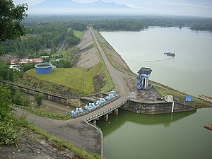
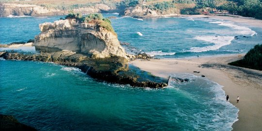

margin-left: 200px; margin-right:200px;">  Waduk Gajah Mungkur (Jawa: ꦮꦝꦸꦏ꧀ꦒꦗꦃꦩꦸꦁꦏꦸꦂ, translit. Wadhuk Gajah Mungkur) adalah sebuah waduk yang terletak 6 kilometer di selatan pusat perkotaan Kabupaten Wonogiri, Provinsi Jawa Tengah. Waduk ini dibuat dengan cara membendung sungai terpanjang di Pulau Jawa, yakni Bengawan Solo. Waduk ini adalah waduk terakhir di Indonesia yang dibangun sendiri oleh Kementerian Pekerjaan Umum tanpa melibatkan kontrakto
 Pantai Klayar adalah sebuah pantai dengan pasir putih dan batu karang serta tebing-tebing batu yang mengelilingi. Pantai ini terletak di Pacitan, Jawa Timur dan berbatasan dengan Wonogiri, Jawa Tengah.Tepatnya berada di Desa Sendang, Kecamatan Donorojo, Kabupaten Pacitan, Provinsi Jawa Timur. Jaraknya sekitar 40 kilometer ke arah barat dari Kota Pacitan. Pantai ini masih segaris dengan Pantai Teleng Ria yang sudah dikelola sebagai tempat wisata terlebih dahulu.
margin-left:200 Taman Margasatwa Ragunan atau juga disebut Kebun Binatang Ragunan adalah sebuah kebun binatang yang terletak di daerah Ragunan, Pasar Minggu, Jawa Barat, Indonesia. Kebun binatang seluas 140 hektare ini didirikan pada tahun 1864. Di dalamnya terdapat berbagai koleksi yang terdiri dari 295 spesies dan 4040 spesimen.